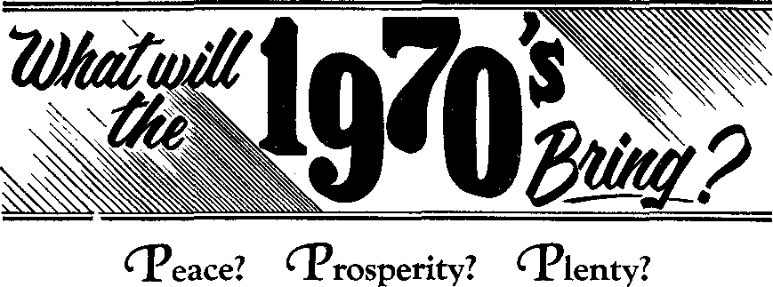

WHOSE LAW? WHOSE ORDER?
WHAT WILL SOLVE TODAY’S PROBLEMS?
OCTOBER 8, 1969
THE REASON FOR THIS MAGAZINE
Now* source* that are able to keep you awake to the vital 1»ues of our timet mutt be unfettered by centorthip and setfish interests. “Awake!" has no fetters. It recognizes facts, faces facts, is free to publish facts. It Is not bound by political ties; It Is unhampered by traditional creeds. This magazine keeps itself free, that it may speak freely to you. But it does not abuse its freedom. It maintains integrity to truth.
The viewpoint of "Awake!" is not narrow, but Is international. "Awake!" ha* Its own correspondents in scores of nations. It* articles are read in many lands, In many languages, by millions of persons.
In every issue "Awake!" presents vital topics on which you should ba Informed. It features penetrating articles on social condition* and offer* sound counsel for meeting the problems of everyday life. Current news from every continent passes in guide review. Attention is focused on activities in the fields of government and commerce about which you should know. Straightforward discussions of religious Issues alert you to matters of vital concern. Customs and people in many lands, the marvels of creation, practical sciences and points of human interest are al! embraced in Its coverage. "Awake!" provides wholesome, instructive reading for every member of the family.
"Awake!" pledges itself to righteous principles, to exposing hidden foe* and subtle dangers, to championing freedom for all, to comforting mourner* and strengthening those disheartened by the failure* of a delinquent world, reflecting sure hope for the establishment of God's righteous new order in this generation. •
Get acquainted with "Awake!" Keep awake by reading "Awake!**
PUBLMBID &MU1.T*N*OUW.T tit THE UWtTTO &TATM ST THt WATCHTOWER BIBLE AND TRACT SOCIETY OF NEW YORK INC. 117 Adams Street Brooklyn, N.Y. 11201. U.S.A.
AND tit ENOIAND BY ____
WATCH TOWER BIBLE AND TRACT SOCIETY Watch Tower House, The Ridgeway London N.W. 7. England N. H. Knorr, Prvriden* Grant Svrrra, Secretary
Average printing each issue: 5,700,000 5d t aopy (Airtrtllft, 5«; Stith AMn, >&■)
Tetrly mbscrfptioa ntM Offlett ‘ for semimonthly editions
Am if Im, U.S,, nr Adtmi Brooklyn, N.I, 11201 fl ANitnlta, 11 Bsresford Rd,, BUitMeld, N.B.W. 2135 |1
Canada, ISO BrfdBeland Ara., Toronto 320, Ont Si England, Witch Tower Mcuae,
The Ridgeway. London N.W. 7 •/flaw Zealand, 621 New North Rd, AocKind 3 9De
Stith Africa, Private Bat 2, P.O, nundsfoDtehi, TtL 7Ge
(Ninthly idltlone aott half th* aWn rrtei.) larnltttnm for nutwrlptioni should ba wnt to the offlee la your ooufitT?. Otherwise send your reftrftteDta to Brooklyn. Nitlte of •Jtffrtllai to mt at tout two toraa before tubfltrfrrtlctt expires.
Now published In 26 languages
Semlmofltfcrj—AftUtaana, Cetaimo, Dtnlfib, Dutch, Eniltob. Ffnntote, Fmtcb, German, Greek, floko, Italian, Japanese. Korean, NonnglRtt, Portuguese, Bnanfath, Bwedlih, Tagalog, Zulu-
Menthly—Chinwe, Ctoyanja, HHUaynon, Malayalani, Pollah, Tamir, Ukrainian.
CHANGES GF ADDRESS thwM m«h a» thirty Saya Mora yoar atttlni data. 6fra vs jw aid aH naw addrm CH pmlbto, yaar old tddrm label). Write WiteN Tawar, Wattk Tawr Hmm, The lldtaway. Leaden R.W. 7, Enikand.
Entered m lecond-clMi matter at Brooklyn, N.Y. Printed in England
Th Dibit tram la Hoi ng ■ tarty mad bi "Awake!” h tin !♦» Warld TraMlttlH ad tla My SartHarei 19fil adit Im, Whan etbw tnmilatlats an and, this to tlaarty aarted.
CONTENTS
How Others Look at
Law and Order for AH Mankind Near!
Crime, Violence and War Wiped Out —Peace and Security World Wide 12
Injustice and Discrimination to End
Forever—Justice and Unity
for All Mankind 16
Poverty, Hunger and Bad Housing
Replaced—Decent Living
Conditions for All 20
Law of Sin and Death Gives Way
—Rule of Health and Life Prevails Do You Really Want Law and Order? Watching the World
DO YOU feel there is more danger to your safety now than twenty years ago? than even five years ago? Are you more uneasy about walking down a street after dark? Do you feel more concern for your children’s safety? Are you more aware of the need for locks on the doors and windows of your home?
If you are like most people in the world, your answer to these questions will be Yes. Everywhere there is growing anxiety about personal safety because of the iryjrease in crime and violence.
AND
ORDER
True, perhaps you personally have never been held up, mugged, sexually attacked or had your home robbed. But more and more people are experiencing these things.
This is especially so in cities. Time magazine stated: "There is hardly a single big city in which the individual feels completely safe on the streets at night.” One person who wrote to the New York Times, May 20, 1969, put it this way:
"Realizing that muggings are taking place by the hundreds and thousands every day in our city, moves me with deep sorrow toward the plight of myself and my fellow New Yorkers. . . .
"Anyone who has ever seen a cold sliver of steel blade inches from his face, as I
have twice, can never again look at a man he does not know with even the most basic human trust. Anywhere he goes at night and often in the day in this city, he must be on guard with the fear of a soldier lost behind enemy lines.”
If we add to this the rioting and student unrest, we can see why, in a recent poll, 81 percent of those polled agreed with the statement: “Law and order has broken down,” Even smaller towns and rural areas are now experiencing this breakdown. And it is becoming much the same in every country on earth. As the president of the Columbia Broadcasting System said:
"Dfeclpllrre is breaking down. ... This turmoil is tragic. But it is also, as James Reston wrote, ‘the biggest story in the world today.’ ” He noted that the entire matter came down to the “deceptively simple question of law and order.”
LAW AND ORDER. That is the cry we hear so much about these days. But just what does it mean? To many, perhaps yourself, it means being able to walk the streets free from muggers, robbers and rapists. It means not having your home or business robbed.
But does it mean this to everybody?
How OTHERS Look at Law and
Order
THERE are many today who feel mat the present Jaw and order are actually working against them. They want more than just safe streets and homes.
For instance, the Houston Chronicle reported: “Some young people are resenting the use of the term law and order/' Many youths are bitter toward the world their elders have made for them. Just one of many reasons for their bitterness is noted by U.S. News <£ World Report:
"About half of those killed [in battle] were too young to vote in most States. More were killed at age 20 than at any other age. . . . The big majority of these youths were not professional military men, but youths who had been in uniform just a year or two."
Growing numbers of young men feel frustrated by laws that require them to kill and be killed, but that they did not make or approve. They claim these laws are unjust.
Members of minority groups also may take a different view of the present law and order. The New York Times said of many American Negroes: “The new stress on U.S. law and order is considered by them to be at the Negro’s expense.” Their cry is for a law and order that will give them social justice and equal opportunity.
People in certain poverty areas of the earth feel that existing laws keep them crushed, restrict them to small tracts of land that are unproductive, maintain them in a state of economic slavery.
Others, though not undergoing poverty, also feel that certain laws are unjust. For example, they may pay a sizable income tax, but see some wealthy people pay little or none because their money is in taxfree investments. Or they may be fined for parking their automobile on the wrong side of a street. But that may have been the only space available, since there may not be enough parking space. Many such things combine to produce gigantic frustrations that put people in a rebellious mood.
Clearly, there is something wrong with the way things are going. There is growing discontentment with existing conditions everywhere. What is the answer? Do away with all law and order? Let everybody do as he pleases? This would result in anarchy, total chaos. This condition almost nobody wants. There has to be some sort of law; there has to be some kind of order.
But the big question is, Whose law and and whose order? Is there any system that will produce law and order along with true justice and equality for all? Well, what has been tried? Have the different systems originated by men worked? Do they have the answers? If not, who does? What is the answer?
half of it is committed in areas that they do not patrol—homes, restaurants, hallways, and elevators.”
WHAT answers are being offered for today’s growing lawlessness?
One of the solutions often proposed is this: USE MORE FORCE, The cries are: “More police!” “Tougher jail sentences!”
No one can rightly deny that a criminal should pay the penalty for his crime. The Bible states that God gave his nation of ancient Israel laws providing for punishment of wrongdoers, even including the death penalty. (Num. 35:31; Ex. 22:1-6) Nor can anyone deny that a weakening of law enforcement in our day could only result in far worse conditions.
The question, then, is: Can a strengthening of the present law-enforcement systems of human society effectively stem the rising tide of crime?
Can Local Law-Enforcement Agencies
Solve the Problem?
Faced with growing crime, police forces in many places are being increased. But police prevention of crime depends to a large degree on cooperation from the public. Today in many areas cooperation with the police is at an all-time low. Besides this, the policemen themselves are subject to the tempting offers of men who would corrupt them.
To what extent can an increase of the police forces ensure safety today? You will be interested to read what the Times of June 3, 1969, had to say about New York city:
“It would cost $25-biIlion a year—a third the total annual budget of the [United States] Defense Department—to have one patrolman around the clock on each of the city’s four-sided blocks.
"And even it this were possible, policemen say it would not stop crime since more than
Recognizing how difficult the problem is, James Vorenberg, former director of the National Crime Commission in the United States, stated: “To a considerable degree law enforcement cannot deal with criminal behavior.” Why not?
Because enforcing the law alone does not change the wrong desires or the hatreds within people. It does not mold basic attitudes. Where the basic thinking is wrong, law enforcement alone will not correct it.
Nor does law enforcement alone eliminate injustice, prejudice and poverty. It does not make greedy men generous, nor arrogant men humble. It does not do away with conditions that often breed frustration and crime.
What Can Governments Do?
Can national governments solve the problem, since they have much more power than city officials? What is their record ?
Have they, for example, been able to maintain peace among themselves, settle their differences in an orderly way, based on just laws? You know the answer. Since 1914 national governments have been caught up in the most destructive wars in history. Well over 100 million persons have been killed or injured! Damage to homes and property has been enormous. Intense hatreds were fired. What influence has this had on attitudes within the nations? Has it inspired respect and loyalty toward existing law and oofev? Look Tnag'axiine gives this answer:
"In nations the world over, both the general public and their leaders always seem to be able to justify any violence perpetrated on their fellow man.. .. Certainly, the existence of sanctioned violence abrades [or erodes] the concept of law and order.”
Of the United Nations, the May 1969 issue of World Union from the Netherlands said:
“The United Nations , . . has been unable to establish any sort of international order. Since its formation we have witnessed the most insane arms race in history and lived under constant threat of a third world war.”
This arms race is costing thousands of millions of dollars every year.
Clearly, governments are not solving the problem. No matter how sincere individuals within them may be, they prove ineffective in producing true law and order.
What of the Economic Systems?
Would improved economic prosperity guarantee reduced lawlessness? By no means. Paradoxically, the richest nations in the world have the highest crime rate! And rising crime among children of wealthier people has bewildered officials. The Royal Bank of Canada Monthly Letter of March 1969 admitted:
‘Increasing criminality in the midst of prosperity within the nation presents grave issues to the people of Canada. They are up against the realization that they must revise the usual by
pothesis that poverty causes crime; they have to allow for the possibility that affluence, too, can be a breeder of criminal acts.”
The world’s economic systems are not diminishing frustrations that may breed crimlnal acts. If you have been shopping lately you well know about the constant rise in prices. Taxes, too, take an ever bigger bite out of income. This economic squeeze contributes to growing discontent. Some react to that squeeze in criminal ways, as is seen in the fantastic increase in shoplifting and in the number of people who cheat on income taxes.
Is it practical to look to p the world’s economic systems for help when they themselves are in an almost constant state of crisis? After one of many recent international crises, Newsweek said: "Once again, the world’s delicate monetary structure teetered on the edge of chaos.” Financial authority L. Albert Hahn said of the world’s economic system: "Undoubtedly, this system is going to collapse some day.” Can that be the basis for a stable society?
What of the World's Religions?
Well, then, are the world’s religious organizations at least leading the way to true law and order?
What do we find among the churches of Christendom? Today we read of more and more clergymen condoning or excusing violence, political meddling, premarital sex, even adultery and homosexuality. The churches themselves are often tom by disputes and rebellion.
Moreover, as Martin Marty, in The Search for
a Usable Future, said: “Poll-takers find negligible differences between Christians and non-Christians on any significant humane or ethical issue.” Thus, Christendom’s churches have proven no better than those they call “pagans.”
Pointing up one of the causes of diminishing influence by Christendom’s churches, U.S. News & World Report noted this observation:
"The prestige of Christianity In the world has been gravely impaired by the frequency with which the so-called Christian nations have used violence as a method of international change.”
But not only members of Christendom’s churches have fought one another on battlefields, in riots or revolts. Members of non-Christian religions have done the same, with Moslem fighting Moslem, Buddhist fighting Buddhist, and Hindu fighting Hindu.
Law and order must spring from the heart to be effective. The world’s religions claim to be the instructors of the hearts of men. Thus the major responsibility for the collapse of law and order must be laid at the steps of those religious organizations. They have failed to lead the way to a genuinely moral, peaceful society among mankind.
Is Science the Answer?
Will science provide the basis for an orderly society?
Scientific technology has produced many machines and products that people enjoy. But along with this came big cities, and these have not worked; they have become focal points of trouble. Science has also produced rapid transportation. But now problems mount as air and land traffic snarls, and tens of thousands are killed in accidents each year.
Too, where did the machines and materials come from that increasingly pollute flae water and air, even the food we eat? Where, for that matter, did the devastating weapons come from that destroyed tens of millions in this generation? From science.
Science has made it possible to send men to the moon, but the cost is gigantic. At the same time thousands of people starve to death every day, cities decay, crime skyrockets.
Would you say that science is solving the really important, most urgent problems of mankind? The truth is as Professor H, S. Com-mager of Amherst said in Saturday Review: "At the end of a generation of unparalleled advance in science and technology, mankind found hunger more widespread, violence more ruthless, and life more insecure than at any time in the century.”
Also, the Melbourne, Australia, Herald reported the following In regard to the direction that scientific advances were taking mankind: “Vice-Admiral Hyman Rickover, whose development work made him known as the father of the U.S. nuclear submarine, warned man . .. that unbridled use of technology 'may become a Frankenstein destroying its creator.' ”
So there you have man’s unpleasant and unsatisfying record. After all these many centuries of opportunity, he has simply been unable to bring law and order with justice and equality. He does not have the answers.
Why not? Why do human schemes continue to fail? What does today’s breakdown really mean?
TRUE, there were other periods in history when law and order broke down. The Roman Empire at its end saw this on a large scale. This is why some people regard today's crime and violence as ‘normal,’ merely ‘history repeating itself.’
But the present breakdown means much more than that. It involves much more than just one country. Authorities now realize that never before have all elements of society in all countries on earth experienced such a severe breakdown at the same time.
However, some say that this can be explained by the population increase and by better reporting of crimes. Is this the case?
Just Population Increase and
Better Reporting?
If the breakdown is just a matter of population increase, then we should find crime increasing at about the same rate as the population. Is it?
In France, Le Figaro states: “Juvenile delinquency quadrupled since 1955.” But juvenile population did not. In Sweden, crime has increased twelve times as fast as population; in Germany, ten times; in the United States from 1960 to 1968, eleven times—and in the Ig.st year, 1968, crime rose seventeen times as fast as population!
Consider, too, that police officials say that much, if not most, crime goes unreported! In some places burglaries occur
about three times as often as they are reported, rapes even more often. In some cities only one-tenth of certain crimes are reported!
That population increase and better reporting do not explain matters can be noted in the following Associated Press report:
“FBI Director J. Edgar Hoover assailed today those who attempt to minimize the nation's crime problem by blaming it on the large increase in the youthful population and fuller tabulations by police. . , . He said those who try ‘to explain away the shocking truth behind crime statistics’ are doomed to failure.’’
Just the ’Criminal Element’?
Nor should you think that it is just the ‘criminal element’ that is involved in this
120%-----------
100%--------------------------------
1
CRIME
60 %—---
20%-----------------------------
POPULATION
From I960 to 1968 the population of the United States rose 11%; but crime rose 122%—11 times as fast! breakdown. The Sunday Bulletin of Philadelphia stated: “Most crime is committed by people who wear nice, clean shirts to work every day and who get together over lunch in company cafeterias or downtown restaurants to decry the way law and order has broken down.”
The same source showed that so-called ‘decent’ people- steal many times more merchandise and money from companies they work for than do holdup men. In the United States, they get over seventy times as much, $4,000,000,000 compared to $53,000,000!
So it is not just hardened criminals who are involved. The attitude of stealing, cheating and turning to violence is saturating much of the human family.
One Clear Meaning
One meaning of this vast breakdown is clear. It was noted by editorial writer David Lawrence: “The more we search for an alibi, the more we discover that unhappiness on earth is man-made. Our key weakness is that we have not solved the problem of self-government.” Humans have failed to govern themselves successfully!
True, man has great mental capacity. He invents amazing machines. He explores ocean depths. He rockets to the moon. But, by his own wisdom and judgment he still fails in controlling his relations with other humans.
No one can say that man has not tried, often sincerely. History shows that for thousands of years everything conceivable in the way of human rule has t^een experimented with. So it cannot be drgued that more time is needed. And if any age should have expected success, it is this one. Instead, it has seen the most dangerous breakdown of all.
Where to Look
Does it make sense to keep looking to proved failures for solutions? No, we must look elsewhere.
But where? Why not look to man’s Maker for answers to the problems of mankind? Non& of us today were living when man’s problems first began. But the Creator was. He has seen all the developments that have led to the present crisis. Surely the Creator of man knows best why human society is breaking down. He knows what the remedy is.
We do not have to wonder abofit the answers either. God has made this vital information available to any sincere person who wants it. These satisfying, convincing and truthful answers are found in the communication that God inspired as a guide for the human family—the Bible: “All Scripture is inspired of God and beneficial for . . . setting things straight.” —2 Tim. 3:16.
Why Man Fails
The Bible clearly shows that God did not create humans with either the right or the ability to govern themselves successfully apart from their Creator. Jeremiah 10:23 says: “To earthling man his way does not belong. It does not belong to man who is walking even to direct his step.”
We might illustrate this by referring to our need for food. God created us with the absolute need to eat food to stay alive. It is not something we can do without. If we stop eating, our bodies break down.
In the same way, God created man with the absolute need for the right mental food. This mental food is information and guidance from God. It is not something humans can do without. (Matt. 4:4) If they throw off this guidance, their affairs break down just as surely as their bodies would if they stopped eating or had a deficient diet. That is why Proverbs 3:5 counsels: “Trust in Jehovah with all your heart and do not lean upon your own understanding.”
Here we see the basic problem: Mankind generally has disregarded God’s superior wisdom and has leaned upon its own inferior thinking. It was so with our first parents, who rebelled against God’s guidance. (Genesis chap. 3) Since then, for nearly 6,000 years, the vast majority of people and rulers have done the same. Since man was created a free moral agent, God has permitted him to make this choice. But man must take the consequences.
The results are before your eyes. It has happened as the Bible says: “Man has dominated man to his injury.” (Eccl. 8:9) Human rule, independent from God’s guidance, has led to inevitable breakdown.
While God permitted man’s tragic experiment in self-rule, he put a definite time limit on it. He will not permit lawlessness to continue indefinitely.—Eph. 1:10; Rev. 11:18.
What Today’s Breakdown
Really Means
The Bible shows that today’s global breakdown in law and order is highly significant What it really means is that this system of things alienated from God is nearing the end of the time limit that God allowed it! It has arrived at its climax.
Even those who do not base their conclusions on the Bible see that a climax is coming. Harvard professor George Wald, Nobel Prize winner, said in Canada’s Victoria Daily Times of April 9,1969:
ARTICLES IN THE NEXT ISSUE
• Can Religion Appeal to Youths, Today?
• A Warning from Ancient Roma, ♦ Fantastic Light with a Future.
• The Little Dote That Move People,
"Over the past few years, I have felt Increasingly that something is terribly wrong j—and this year ever so much more than last. ... I think we've reached a point of great decision, not just for our nation, not only for all humanity, but for life upon the earth.”
Professor Fred Hoyle of England warned that society has “already started to disintegrate.”—The Melbourne Age, March 4, 1969.
This is just what the Bible foretold would take place as God’s permission of human rule drew to its close. Second Timothy 3:1 said: “In the last days critical times hard to deal with will be here,”
All the evidence in fulfillment of Bible prophecy shows that the “last days” began in the year 1914. Time magazine of August 30, 1968, observed: “To date, the 20th century's most fateful year was 1914,” The beginning of World War I saw this system enter its final period of human rule. The worst breakdown in history began. Since then it has picked up speed.
Read for yourself what the Bible says would take place to mark these “last days.” Second Timothy chapter 3 gives many details. Matthew chapter 24 records many that Jesus gave. One of these was “the increasing of lawlessness,” which we see everywhere.—Matt. 24:12.
But the fact that we live in the “last days” does not mean there is no hope. It does not mean that law and order with justice and righteousness will never be realized.
It means just the opposite! Today’s global breakdown is positive evidence that the good conditions that honest persons long for are very near to being realized!
WOULD you like to live under a government that would free human society from crime, violence, war, injustice and poverty?
A government that can bring
such benefits will never come by digging deeper into the same old barrel of human failures. It can _
be brought about only by One who has the proved ability to establish universal law and order. That One is Jehovah God, the Creator. His ability is demonstrated in the visible heavens, of which nuclear scientist Cecil B. Hamann said;
“Lifting our eyes to the heavens, we surely must exclaim with wonder at the orderly sweep of the stars. Night after night, season after season, year after year, century after century the worlds of outer space have followed their courses through the sky. They return so regularly In their orbits that eclipses may be predicted centuries in advance. ... If they were subject to no laws, would men put their faith in them to guide them across the seven seas or through the unmarked paths of the sky?”
The God who established such amazing law and order throughout the universe could surely establish it on one tiny planet, could he not? And God’s clearly stated purpose for our day is to provide a government to do just that! The Bible foretold:
“In the days of those kings the God of heaven will set up a kingdom that will never be brought to ruin. And the kingdom itself will not be passed on to any other people. It will crush and put an end to all these kingdoms, and it itself will stand to times indefinite."—Dan. 2;44.
Daniel’s prophecy shows that all governments of men will be replaced by one government of God! It will not try to patch up men’s failing systems, but will crush
them to dear the way for a much-needed change. (Mark 2:21, 22) And since it will rule from heaven, humans will never be able to control it or to corrupt it.
Is there any possibility that God’s kingdom will become oppressive? Well, are the physical laws that God has established to regulate the universe oppressive? No, instead they make for marvelous order and harmony. In the same way, God’s laws for governing human relations will make for the very best order and will provide the greatest benefits. Only if a person ignores them will he come into difficulty, just as you would if you ignored the law of gravity and jumped off a high building.
We can be sure God’s rule will not be oppressive or unjust, because his Word guarantees: “He purposes to judge the inhabited earth in righteousness.” (Acts 17:31) Also, the Bible says: “God is not a man that he should tell lies.” (Num. 23:19) So when God promises a new order where “people must dwell in a peaceful abiding place and in residences of full confidence and in undisturbed resting places,” then we can believe it.—Isa. 32:18.
Such a government ruling over earth is just what mankind needs to bring relief from today’s horrible conditions. But just how will it solve the problems of crime, violence and war? What evidence do we have right now that it will really work?
WHAT would it mean to you to be. able to throw away locks and keys and never worry about thieves?
How would you feel to be able to walk anywhere at any time and know that anyone you meet is a friend?
Would you not feel deeply comforted to know that war was forever a thing of the unpleasant past?
Such genuine peace and security are not a dream. They are sure to come, but only under the rule of God’s kingdom.
True, some may call it unrealistic to believe this. Yet they continue to put their trust in imperfect humans who have promised solutions that never come. Is that realistic? No, the realist is the one who faces the facts and puts his trust, not in failing humans, but in God, who “cannot lie.”—Titus 1:2.
Getting Rid of the Bad
How will God realistically deal with today’s rising lawlessness? Well, how does a farmer deal with weeds that have overgrown a plot of land he wants for a crop? He uproots the weeds, or plows them under, taking them out of the way—yes, by force! Proverbs 2:22 says: “As regards the wicked, they will be cut off from the very earth; and as for the treacherous, they will be torn away from it.”
Why should we believe that force will work in this case when it has failed under man’s rule? Because God has perfect control of his force. Genesis 18:25 says: “It is unthinkable of [God] ... to put to death the righteous man with the wicked one.” How unlike the nations of this world who destroy lives indiscriminately in their warfare!
Yet you should not think that the cutting down of wicked ones involves only a ' few people. Much of what is acceptable to the majority these days is detestable to God. For instance, many do not think that fornication, adultery and homosexuality are wrong. Many make a practice of lying, cheating and stealing, perhaps operating behind a front of legality. Some prefer to be drunkards; others promote violence and killing. Yet, God’s Word warns that unless such persons turn from their course, they will be cut down with this wicked system. —Rev. 21:8.
That the wicked who are to be annihilated will be many is prefigured in Bible prophecy: “Those slain by Jehovah will certainly come to be . . . from one end of the earth clear to the other end of the earth.” (Jer. 25:31-33) This will be right and just, for Jehovah is the judge and can read the hearts of men.
Thus, in one clean sweep, Jehovah will rid the entire earth of all crime and violence! Yet, how do we know that this lawlessness will not crop up all over again?
Righteous Ruler of God’s Kingdom
To preserve righteousness, a righteous ruler is needed. He must be one who himself keeps God’s standards of law and order.
Where can you find such an administrator for our planet earth? Who is there that unswervingly spoke the truth, stood up for what was right, pleaded the cause of the poor and oppressed, and had such love for others that he laid down his life for them?
The only one who has all the qualifications is Jesus Christ, the one who was
“tested in all respects . . . but without sin.’’—Heb. 4:15; John 3:16.
While on earth, Jesus proved faithful toward God’s standards of truth and righteousness, even when subjected to an agonizing death. His reward was that God resurrected him to heavenly life with the right to be ruler of God’s kingdom. (1 Pet. 3:18; Ps. 110:1) Then, with the establishment of that heavenly kingdom at this “time of the end,” Christ began to rule. “The kingdom of the world has become the kingdom of pur Lord and of his Christ, and he will rule as king forever and ever.” —Rev. 11:15.
Since Christ himself sets the best example of one who keeps God’s law and order, his subjects are encouraged to do the same. Too, honest-hearted persons will be drawn to lawful, loyal service of this righteous ruler because he deals with his subjects in such a considerate way. For he said: “Come to me, all you who are toiling and loaded down, and I will refresh you. Take my yoke upon you and become my disciples, for I am mild-tempered and lowly in heart, and you will find refreshment for your souls. For my yoke is kindly and my load is light.” (Matt 11:28-30) Yes, what a delight to obey that kind of ruler!
Associate Administrators
The Bible shows, too, that Christ Jesus, as ruler of God’s heavenly government has many capable administrators as heavenly associates. (Rev. 20:6) They are numbered at 144,000. (Rev. 14:1) That many will certainly be sufficient to see that God’s standards of law and order are maintained earth wide in the new order.
These associate administrators have much the same qualities as Jesus. How do we know ? Because they all will have served as his loyal followers on earth, proving their love for righteousness by maintaining loyalty to God’s laws under persecution even to death. Hence, they too are rewarded by being resurrected to spirit life in order to rule with Jesus from the heavens. (Rev. 3:21) And what kind of attitude do they have as administrators? Jesus said to the first ones in line to be of these associates:
“You know that the rulers of the nations lord it over them [the people] and the great men wield authority over them. This is not the way among you; but whoever wants to become great among you must be your minister, and whoever wants to be first among you must be your slave.”—Matt. 20:25-28.
Would you not want to be the subject of rulers who are honest, truthful and humble, who unselfishly serve the needs of mankind? Christ and his corulers have proved themselves to be such. Under their rule, people will never again chafe in hopelessness and frustration due to feeling that their governments do not care about them or are not honestly working in their behalf.
Further Encouragement
There are other aspects of the rule of God’s kingdom that will encourage law and order. For instance, today much hatred and division are incited by political and nationalistic propaganda. Much crime and immorality are incited by motion pictures, television shows and reading matter that stimulate the baser emotions of people.
But in God’s new order every means of communication will be devoted to that which is true, wholesome and upbuilding, “because the earth will certainly be filled with the knowledge of Jehovah.’’ (Isa. 11: 9) This will help produce an entirely new atmosphere, a new spirit throughout the world, one that encourages people to do what is right.
Also, a strong deterrent to wrongdoing will be the fact that no lawbreaker will ever ‘get away with it’ Even electronic devices are unable to catch some lawbreakers today. But the Bible tells us: “Jehovah—in the heavens is his throne. His own eyes behold, his own beaming eyes examine the sons of men.’’ (Ps. 11:4) So no crime will go undetected by God and his Kingdom representatives.
Any person who stubbornly refuses to change from a wrong course in God’s new order will not be allowed to continue living, for that would jeopardize the peace and security of others. The rule will be: “As for the sinner, although a hundred years of age he will have evil called down upon him.” (Isa. 65:20) That will mean his destruction. What a comfort and protection that will be for those who want to do what is right!
Can we have absolute confidence that such heavenly administration of law and order will really work? Yes! And we do not need to wait until God’s new order for proof. We can examine that proof today!
Bible prophecies show that when the “last days” began in 1914, God's heavenly government in the hands of the enthroned Son of God began ruling. A government has subjects over which it rules. Who, then, are the subjects of God’s Kingdom government? The ones who acknowledge: “Jehovah is our Judge, Jehovah is our Statute-giver, Jehovah is our King.” (Isa. 33:22) They are those who worship Jehovah God and bear witness to others about him and his kingdom.—Isa. 43:10.
So God’s heavenly government has subjects on earth today—faithful witnesses of Jehovah. Now more than a million of them in 200 different lands actively work in behalf of that kingdom.—Matt. 24:14.
What are they doing about law and order right now? First of all, they are getting the right foundation for it. Regularly, they take in knowledge of God’s laws from his Word. (John 17:3) They do this in private study, at their family Bible studies, and at their more than 25,000 congregations throughout the world where all meetings are devoted to Bible education and practical application of Bible principles to daily living.
Law and Order Now!
What has this produced? For one thing, the fulfillment of the prophecy: “They will not lift up sword, nation against nation, neither will they learn war any more.” (Mie. 4:3) Yes, among Jehovah’s witnesses the problem of war has been solved already!—1 John 3:10-12; 4:20, 21.
What is true about war Is also true about crime and violence. These things are virtually nonexistent among Jehovah’s witnesses. They have learned to respect their neighbor’s life, property and rights.—Rom. 14:19; Gal. 5:19-23.
Others who examine the Bible-based society of Jehovah’s witnesses recognize the high quality of their law and order.
When city officials in Pasadena, California, observed Jehovah’s witnesses during one of their large conventions, they exclaimed: “Amazing!” “Never saw anything like it in my life!” A person at city hall there said: “It is amazing to have more than 100,000 visitors [Jehovah’s witnesses] in a city for more than a week and not one incident from the group to be reported to the police.”
Source of Their Success
How are they able to accomplish what this world has not? Because the Bible is their ‘constitution,’ and they live by it. When it tells them to be peaceful and lawabiding wherever they live, rendering “Caesar’s things to Caesar,” they comply. But when it tells them to render “God’s things to God,” they make sure they do that too. And when there is a conflict between God and “Caesar,” they “obey God as ruler rather than men.”—Matt. 22:21; Acts 5:29.
God's laws work so well because they are based on love, which reaches the heart. Jesus said; “You must love Jehovah your God with your whole heart and with your whole soul and with your whole mind,” and “you must love your neighbor as yourself.” (Matt. 22:37-39) This deep-rooted, genuine love for God and neighbor cultivated by proper Bible education is the very strongest deterrent to war, crime and violence. It touches the heart and motivates people to want to do what is right.
Even under the severest persecution, Jehovah’s witnesses stay loyal to God’s laws. For example, when the Nazis under Hitler demanded that Jehovah's witnesses in Germany break God’s laws, they refused. So they were sent to concentration camps. An inmate of those camps, N. Gun, later wrote in his book The Day of the Americans: “The members of Jehovah’s Witnesses, it must be said, showed such courage, daring, virtue, and stoicism in adversity that they deserve a special salute. They were rocks in a sea of mud.”
It is not government buildings or armies that show whether a government is really successful. It is what that government produces and how its subjects support it. Now, what government in our time produces such law and order among its subjects that policemen and armies are not needed? What government receives such wholehearted support that its subjects as a body willingly choose to suffer and die rather than disobey its laws? Only God’s kingdom ruling over its subjects is accomplishing these things today.
Thus, when the Bible speaks of law and order in God’s new system, it is not speaking about something that may not work. It is working—and right now! And its visible effects will be even more evident after the wicked are wiped out, eliminating their evil influence. Then, “the meek ones themselves will possess the earth, and they will indeed find their exquisite delight in the abundance of peace.”—Fs. 37:11.
FIR. law and order to be truly effective, it must be accompanied by justice and equality. Prejudice and hatred based on racial or national differences must be ended.
However, if we look to humans to bring this about on their own, the outlook would be very depressing. Mankind’s history is filled with injustice and discrimination resulting from such national or social prejudices.
Entire nations and races have been oppressed, enslaved and even annihilated because of these prejudices. Today we see growing hostility between black and white, Jew and Arab, Chinese and Malay. We see suicidal tribal warfare in Africa and rising nationalism almost everywhere.
World’s Political and Religious
Ideologies Fail
The situation today is just as Ivo Ducha-cek observed in Conflict and Cooperation Among Nations when he said: “Nationalism divides humanity into mutually intolerant units. As a result people think as Americans, Russians, Chinese, Egyptians or Peruvians first and as human beings second—if at all.”
Not even powerful political ideologies such as communism are able to overcome this national and racial hostility. For example, in March of 1969 one of many armed clashes between the two leading Communist nations resulted in the death of 31 Russians and many Chinese.
Nor are the religions of this world able to overcome national and racial prejudices. A Catholic man who had studied at the Notre Dame and Cantoria seminaries in Paris noticed how his fellow Catholics killed one another during World War n because of national differences, and stated:
“I was scandalized by the sermons pronounced by my chaplain about the soldiers on the ‘other side.’ Time and again, at confession, I asked him why the pope did not forbid Catholics on both sides from massacring each other. I received no answer."
Even in the same nation, persons may attend the same church with others of the same race and nationality, yet look down on them because they are not as wealthy or socially prominent. One person from the United Church in Canada wrote:
"The church was run by ten-dollars-a-week Christians. If you gave less, the ushers did not show you to your pews but did show the big givers. Wealthy members were stiffnecked, not speaking to middle class families.1’
Probably you have noticed such things yourself, because these experiences are by no means uncommon. Everywhere divisions exist because of nationality, race or social standing. The mutual political or religious beliefs of people fail to overcome these divisions.
Basic Change Needed
Even if political governments were to pass Jaws outlawing hatred and prejudice, ordering people to love one another, would that help? No, because the basic thinking of people cannot be changed merely by passing a law. Love cannot be legislated into human hearts. As American educator Horace Mann said:
“Let but the public mind once become thoroughly corrupt, and all attempts to secure property, liberty, or life, by mere iorce of laws written on parchment, will be as vain as to put up printed notices in an orchard to keep off cankerworms.”
What is needed is a basic change in thinking and heart attitude. But that can come about only by the right kind of education. Today, however, the educational systems of all nations are geared to their nationalistic views. People are educated to compete with others in pride.
Such education can never eliminate national,' racial or social prejudices. Its appeal to right thinking is superficial at best. Its effect on human hearts is just as superficial.
God’s Kingdom Brings Right Education
Only under God's kingdom will a fundamental change come. How? By the right kind of education.
Remember, after the end of this wicked system of things, God’s heavenly government will have total control of the earth. That means it will have total control of all education. There will not be hundreds of conflicting systems of education operating throughout the world in God’s new order as is the case now. No, there will be only the one system that God provides through his Kingdom representatives on earth.
Teaching people the truth about proper human relationships will receive high priority in God’s new order. Every person
will be taught Jehovah’s righteous standards. That uniform education will bring to the attention of everyone that “God is not partial.” (Acts 10:34) No person is favored by Him over another because of nationality, race or social background. Emphatically, the Bible declares: “Is there injustice with God? Never may that become so!” (Rom. 9:14) Each person can thus be assured of justice, of fair treatment.
In God’s new order all men will learn that they are indeed “brothers,” since they have all originated from the first man and woman that God created; “He made out of one man [Adam] every nation of men.” (Acts 17:26) Instead of pride of race, of nationality or of social standing, earth’s inhabitants will learn to love and respect one another, treating one another with dignity. Jesus said: “I am giving you a new commandment, that you love one another; just as I have loved you, that you also love one another. By this, all will know that you are my disciples, if you have love among yourselves.”—John 13: 34, 35.
Remaking the Personality
But how can such a command to love one another succeed when we previously said that any law to this effect enacted by political leaders would fail?
It will succeed because the knowledge of God is powerful enough to reach the heart and transform a person’s deepest attitudes. The Bible says of Jehovah that his “law is truth.” (Ps. 119:142) It also says: “The word of God is alive and exerts power and is sharper than any two-edged sword.” (Heb. 4:12) So God’s truths can pierce to the very hearts of men, moving them to break the bonds of prejudice.
With every person on earth being fortified with the right mental food, there will be a wholesome remaking of personalities. The Bible shows that such a deep-rooted change is possible when it says: “Strip off the old personality with its practices, and clothe yourselves with the new personality, which through accurate knowledge is being made new according to the image of the One who created it, where there is neither Greek nor Jew, . . . foreigner, Scythian, slave, freeman,.,, clothe yourselves with love, for it is a perfect bond of union.”—Col. 3:9-14,
So in God’s new order, all will learn the right viewpoint—God’s. Eventually, in the fullest sense will it be true that “the earth will certainly be filled with the knowledge of Jehovah as the waters are covering the very sea." (Isa. 11:9) Hence, the Bible principle is that, with God’s judgments going forth, “righteousness is what the inhabitants of the productive land will certainly learn.” (Isa. 26:9) Thus, of the entire human family it will be said: “All you are brothers.”—Matt. 23:8.
Yet, if you view the human family today, you may rightly wonder if all this is possible. What proof is there that people of different races, nationalities and social backgrounds can become “brothers”?
Again, you can examine the evidence right now. If such harmony can be demonstrated under present conditions, then surely in God’s new order there would be even greater harmony, since the pressures of this evil world will be gone.
Bible prophecy says: “It must occur in the final part of the days that , . ■. many peoples will certainly go and say: 'Come, you people, and let us go up to the mountain of Jehovah, . . . and he will instruct us about his ways, and we will walk in his paths.’ , . , And he will certainly ... set matters straight respecting many peoples.’’ —Isa. 2:2-4.
Notice that this prophecy speaks about the “final part” of the days. This calls to mind the period referred to as the “last days” at Second Timothy 3:1. So right now, today, you should expect to find people learning Jehovah’s ways and becoming unified in a worldwide bond of love, regardless of race, nationality or social standing.
Where can you find such harmony anywhere on earth today? The world press acknowledges that this kind of harmony does exist. The St. Petersburg, Florida, Times reported after a recent convention:
“WITNESSES PRACTICE RACIAL HARMONY. ‘Black and white together.’ The Jehovah’s Witnesses don’t sing about it, they just practice it. Not only has theconveation been a massive example of racial harmony with black and white worshiping together, but it has tucked some 700 Spanish-speaking Witnesses into its programs without a murmur."
After a similar convention of Jehovah’s witnesses, an observer wrote to the Asheville, North Carolina, Citizen:
“Never was there a policeman in sight. There were no raucous noises, no disturbances and no altercations. . . .
“The order was perfect and there was no obscene shouting. Remember there were at times as many as seven thousand people around the headquarters—a good many of them colored.
“There was NO litter about. . . . Undoubtedly they were motivated by the Spirit of Good Will towards humanity.”
A former member of the United Church of Christ in the Philippines contrasted those in her church with Jehovah’s witnesses, saying: “We were disposed to be cool toward those of different dialects; we were regionalistic. The Witnesses did not have this drawback.”
A Negro mother in the United States relates her experience:
“Jehovah’s witnesses came to our house at least two or three times before we ever decided to have a Bible study conducted in our home. Along with being prejudiced toward white people, I was very opposed to having the Witnesses come to my home. But I just decided to let my husband find it all out by himself.
"About a month later, the Witnesses invited us to their Kingdom Hall. Well, here is where I really thought that it would ‘do my husband in.’ However, even I was surprised to see the Witnesses when we got to the hall. They were altogether different than I thought they would be. Warm and friendly just aren’t words enough to describe them. . . . To them there was no difference in our colors. We were just the same as they were. That did it with me.
I was so. ashamed of myself.
“From all of our Bible studies we have learned how to conduct ourselves, how to love each other, and now we know that this is the right way to go. It has changed our relationship with each other, made us have a happier marriage, made us be better parents.
"It has given us something to hang onto and showed us what we have
to do in order to gain everlasting life. Before that, we could have gone to church for a hundred years, and we never would have learned what Jehovah God’s purpose for us was.”
No matter where you look—in Africa, Asia, Europe, the Americas, the islands of the seas, it is the same—Jehovah’s witnesses have overcome the barriers of racial, national and social prejudice.
How has this been possible? Do these persons have greater intelligence than others? Do they go to the better schools of this world? No, it is because they are doing what Isaiah’s prophecy foretold: listening to what Jehovah says in his Word, and then living it in their daily lives.—Prov. 2:1-9.
It is a fact that among the more than a million witnesses of Jehovah in 200 lands an unbreakable bond of love and unity exists. This is solid proof that injustice and discrimination will truly end forever in God’s new order.
However, what about the huge economic problems of today? What about poverty, hunger and poor housing? How will these matters be dealt with in God’s new order?
ARE you eating well these days? Do you live in a comfortable home? Do you have a steady income?
If you can answer “Yes” to any one of those questions, ther. you are quite different from most people on earth.
Why? Because about 10,000 persons starve to death every day, two-thirds of the entire human family being underfed. And most people in the world live in poverty, in bad housing.
Yet, what if just one of the world's most powerful nations were to use the money it now spends on war preparation to build houses costing $10,000 apiece? A total of eight million private homes could be built every year! And what if the money spent on war by all nations were used the same way? A lovely home could be built for each new family now being formed throughout the entire world!
However, this is not being done. And there is no indication whatsoever that it will be done by human governments.
Economic Systems Not
Satisfying Needs
The hard fact is that this world's economic systems are not satisfying mankind’s basic needs. On the contrary, the world’s poor and hungry are rapidly increasing.
A United Nations survey found that the unemployed in Latin America alone had risen from 18 million to 23 million from 1960 to 1968. Local governments there are not able to hold out any real hope of improvement. This has resulted in the building up of a cynical, angry mood among many, especially the young people.
In Africa, poverty, overcrowded slums and hunger are the order of the day.
Even the wealthy United States has millions of poor people. Also, its ‘middle class’ is being squeezed financially as constant inflation brings rising prices. All this brought forth the following comments recorded in U.S. News & World Report of July 7, 1969;
A machinist in Indiana: ‘‘They fix wages so you can just keep your head above water. When I made $16 a week, I saved. Now I make $700 a month and can barely get by.”
A dairyman in Illinois: “There's no re* tiring now. You almost have to work to the end of your life, A lot of people have saved for the rainy day and then don’t have enough. Social Security doesn’t cover it any more.”
A painter in California: “The fact that all taxes go up with no end in sight is discouraging. People are more frustrated than I can remember in a long time.”
These comments are not unusual. They are typical. Yet, these persons live in the richest nation on earth. Imagine how people feel in countries such as India, where in Calcutta alone there are 100,000 persons living on the streets because they have no home or income!
However, while today’s economic systems are failing to meet mankind’s needs, the economic system in God’s new order will meet them. Indeed, it will supply an abundance, for God’s Word promises: “You [God] are opening your hand and satisfying the desire of every living thing.” —Ps. 145:16.
No Wasting of Resources
Today, much time, energy, money and material are spent producing things that do not help mankind one bit. Weapons of
war take a tremendous proportion of the resources of nations.
In God’s new order, such waste will not be the case. Since there will never again be war or violence, no guns, bombs, missiles or other weapons will ever be manufactured. The many materials now wasted on these things will be turned toward peaceful pursuits. Isaiah 2:4 sets the rule: “They will have to beat their swords into plowshares and their spears into pruning shears.”
Under the central authority of God’s heavenly kingdom, all of-earth’s rich resources will be used for man’s good. Those “ruining the earth” will be gone.—Rev.
11:18.
Selfish Competition Replaced by
Loving Cooperation
Nor will there be the waste that comes from economic competition. Today, individuals, businesses and nations try to outdo one another, even attempting to put others out of business. Much anxiety, hatred and war have been caused by economic competition.
How distressing it is can be noted in an editorial entitled “The Competition of American Life,” carried by the New York Times of June 25, 1969. Commenting on the difficulty President Nixon had in finding qualified men for high office, it stated:
“ ‘I had never realized,’ one Cabinet member remarked the other day, ’what a toll the tierce competition of American business and professional life has taken on many of our most talented and successful men. Many of them have simply been worn out in the struggle. Many more have aJJ kinds of family problems they cannot leave. In a great many cases, they have taken to drink to such an extent that the risk is too great.'...
“Meanwhile, the competition is beginning earlier and increasing all the time: to get into the best schools, to get into the best universities, and to meet the tests of a compulsive and driving society. . . . [Mr. Nixon’s] search for successful men is turning up some tragic cases and forcing some somber conclusions."
Long ago, the Bible recorded the folly of such competition, stating: “For what does a man come to have for all his hard work and for the striving of his heart with which he is working hard, under the sun? For all his days his occupation means pains and vexation, also during the night his heart just does not lie down.” “All the proficiency in work . . . means the rivalry of one toward another; this also is vanity and a striving after the wind."—EccL 2: 22, 23; 4:4.
God's Kingdom rule will eliminate this competition. Since there will be only one government, there will logically be only one system of economics. Instead of competition between humans, there will be cooperation. Love for one’s fellowman will mark all human relations. (John 13:35) Nor will some be rich, while others are poverty-stricken. And all will share in working for mankind’s benefit, the rule being: “If anyone does not want to work, neither let him eat.’’ (2 Thess. 3:10) This means no lazy persons will live off others. No, it will not be a ‘welfare state.’
Pleasure in Work
Work in God’s new order will be a real pleasure, as man will be able to see the direct results of his labor. But that is frequently not the case today. How many people actually enjoy their work now?
Thousands stand on mass-production assembly lines, inserting a nut, bolt or small part in machines all day long. They do it just to make money to pay their bills, not because they enjoy it. Others ztoil in the hot sun as migrant farm workers on property and crops that will never be their own. Their personal satisfaction is often small. And how much pleasure can there really be in trying to sell products through misleading advertising, trying to push on people things they do not really need, or making products you know are designed to wear out soon so more can be sold?
God’s new order will bring splendid changes in this regard. The carrying out of the “kingly law" of ‘loving your neighbor as yourself’ will eliminate the greed that converts men into mere cogs of a huge machine. (Jas. 2:8) It will also move men to do good work, motivate them to produce, not shoddy products, but excellent things for their fellowman, fine workmanship in which they will take genuine pleasure.—Eccl. 3:12, 13.
Housing Problems Solved
The promise made long ago to ancient Israel will be fulfilled toward all on earth under God’s government. “They will certainly build houses and have occupancy; and they will certainly plant vineyards and eat their fruitage. , . . the work of their own hands my chosen ones will use to the full. They will not toil for nothing.” —Isa. 65:21-23.
Jehovah did not purpose for man to live piled on top of one another in squalid city slums. That goes against the very nature of man. Look magazine of June 10, 1969, states: “Among all vertebrates from mice to hippos to men, the one universal condition that produces uncontrolled aggression is overcrowding. Among humans, hostility erupts when people start intruding on each other’s ‘personal space.’ ”
When Jehovah created man and woman, he placed them in a lovely garden, not a miserable city slum. (Gen. 2:7, 8) Cities were first built by men, alienated from God. (Gen. 4:17; 10:8-12) They have since brought all kinds of misery, frustration and crime. But soon, in God’s new order, the crowded cities of today will be gone forever, replaced by decent homes for all.
Earth Produces an Abundance
In God’s new order, man will not have to struggle in vain with the earth, as he often does now. Then, Jehovah will bless humankind with an abundance of food.
The Bible book of Psalms describes God’s blessings, saying: “There will come to be plenty of grain on the earth; on the top of the mountains there will be an overflow.” “ [God] is making green grass sprout for the beasts, and vegetation for the service of mankind, to cause food to go forth from the earth.” Yes, “the earth itself will certainly give its produce; God, our God, will bless us.”—Ps. 72:16; 104:14; 67:6.
But how do we know that humans will not again create awful living conditions? How can we be sure they will not turn decent homes into miserable slums?
For one thing, God’s kingdom will be in total control. No potentially bad condition will escape its notice or correction. For another, all those living then will have been educated in God’s ways. They will have learned God’s high standards of cleanliness and order that make for decent Living conditions.
Do we see such high standards among worshipers of Jehovah today? After a large convention of Jehovah’s witnesses in Winston-Salem, North Carolina, the coliseum manager said: “Without reservation, that’s the cleanest, most orderly bunch of people that has been in the coliseum in the nearly 10 years I have been there.” And after their huge convention in New York in 1958, attended by over 250,000, the 1959 Arena, Auditorium <& Stadium Guide said:
"Not so much as a match stick or discarded candy wrapper could be found in the stadiums and other areas they had rented. Thousands of their members, men, women and children, made up a committee to leave every square foot of area as clean or cleaner, than they had found it,”
What they do at conventions, they learn to practice at home.-By making their minds over to God’s standards of law and order, they come to appreciate neatness and cleanliness. Even if their homes used to be messy, friends observe that they begin to keep them neat and clean. This does not require a lot of money, but a willingness to work. Since this is now being done even while surrounded by neighbors who often do not care what their homes look like,.you can see how much easier it will be in God’s new order when everybody will have learned the same high standards of good order.
Then, too, in times of disaster, such as floods or storms, Jehovah’s witnesses aid their brothers, supplying them freely with money, materials and time, giving what they have. Such a spirit of unselfishness is what will prevail earth wide in God’s new system.—2 Cor. 9:11-14.
Is it not thrilling to consider a new order free from war, crime, injustice, poverty and hunger? What a delight it will be to live in peace and security, in unity and love, having decent living quarters and ample nourishing food! That would really be, as Jesus called it, “Paradise.”—Luke 23:43.
Persons living under those conditions will surely want to keep living. But yet, sickness and death now prevail. What will God’s Kingdom rule do about these great enemies of mankind?
THE rule of God’s kingdom will bring in a health program far greater than human governments have even attempted. This will have a decided effect on earthly-law and order. Why so?
The way you feel has a lot to do with the way you act. Sick persons often do things they would not otherwise do. Illness as simple as a headache or indigestion can provoke irritable words and bad-tempered actions, and these may trigger violence.
Prolonged and serious illness can bring neurosis. The neurotic may attempt suicide or become mentally deranged. Such persons have carried out mass murders —sometimes of their own families. You have read about such things in your newspaper.
Modern Health Programs Insufficient
Good health is a priceless possession, a vital factor in contented living. But the human family today is not healthy. Some 700,000,000 persons in Africa, Asia, Central and South America still suffer from malaria. Malaria, elephantiasis or hookworm may be no problem in the so-called “advanced countries,” but there cancer and heart disease take an ever greater toll. These advanced countries also face mounting dangers of pollution—of air, water and land. As Dr. Barry Commoner said recently:
'‘The new technological man carries stron-tium-90 in his bones, iodine-131 in his thyroid, DDT in his fat, and asbestos in his lungs.” —The New York Times, May 3, 1969.
Big cities, too, find it ever harder to handle sanitation, sewage and waste disposal problems. Such conditions do not contribute to orderly living.
Contrary to what many believe, medical science has been unable actually to extend man’s life-span. The March 1968 issue of Scientific American stated:
"The common impression that modern medicine has lengthened the human life-span is not supported by either vital statistics or biological evidence. To be sure, the 20th-century advances in control of infectious diseases and of certain causes of death have improved the longevity of the human population as a whole. These accomplishments in medicine and public health, however, have merely extended the average life expectancy by allowing more people to reach the upper limit which for the general run of mankind still seems to be the Biblical fourscore years.”
This shortness of human life also affects law and order. How is that?
Knowing that life is short gives some, even youths, a feeling of frustration. People feel cramped for time to accomplish all they want to accomplish. The urge to get where they are aiming quickly often drives men to aggressive acts without regard for the interests of others. This is true of national rulers as well as ordinary citizens.
We cannot discount these factors of poor health and short life when considering the problem of law and order. They contribute to the growing number of drug addicts. Impatient, short-lived humans stain modem highways with the blood of millions killed in auto accidents. The urge to ‘get rich quick,’ to ‘get all the pleasure one can before old age sets in,’ lies at the base of countless legal violations and criminal acts.
and
sickness
How did mankind get into this situation? How can relief come?
Source of Problem
Mankind has learned many
valuable things about human health and human illness. But medical science still does not know the real cause of death. Medical scientists know that disease is a 'biological disorder/ an abnormal condition. Cancer cells, for example, are cells that have 'gone wild,’ multiplying without any regard for the orderly functions of other cells and body organs. But what causes these disease-producing disorders?
Germs, bacteria, microbes, viruses? This is not the final answer. For medical scientists tell us that the defensive system built into the human body is so complex and so powerful that man should never get sick. Persons with proper nutrition and high resistance are often not affected by the bacteria that bring death to others.
Researchers and biologists speak of the human body as possessing “potential immortality,” of the possibility of the body’s never dying, due to continual self-repair and self-renewal. As biochemist William Beck observed:
“I can see no reason why death, in the nature of things, need be inevitable.”
So not only sickness but also old age and death appear to be abnormal, out of order for the human body. Why, then, does mankind chafe in bondage to these things ? Human scientists can only theorize as to the answer. As the book The CcU, part of the Life Science series, states:
"There . . . are a number of theories which attempt to account for the invariable and apparently inevitable aging process within the cell—and therefore within man himself. None of them is definitive, none generally accepted.”
Only the Bible gives us the answer to our questions. It alone tells us the cause of sickness and death. And it gives assurance that this disorderly condition in human bodies will be removed under the program of health and life carried out by God’s righteous government
Freedom from the Law of
Sin and Death
In the Bible, in the apostle Paul’s letter to the Romans, chapter eight, verse two, he speaks of persons being ‘set free from the law of sin and of death.’ The Bible shows that that law began to apply when the first human pair rebelled against their Creator in Eden. (Gen. 3:1-19) By their rebellion they placed themselves out of harmony with God, his law and his order. They lost their good conscience toward God and the peace of mind this brought. They showed a sickening of the mind and this also introduced imperfection Into their bodies. As the apostle expresses it, they came under "sin's law," became its slaves, and "sin ruled as king with death’’ over them. It has since ruled over all their descendants, including us today.—Rom. 5: 12, 19-21.
But the purpose of God’s Kingdom rule by his Son Jesus Christ is to restore obedient mankind to harmony with Jehovah God, the Creator. Psalm 68:20 tells us: "To Jehovah the Sovereign Lord belong the ways out from death." He has provided the legal means for canceling out the sinful condition of all those who seek him and who place themselves under his direction. That legal means is the ransom price paid by his own Son, who gave his human life in perfect sacrifice and thereby became God’s "Chief Agent” of life and salvation to all those who obey.—Acts 3:15; Heb. 2:10.
After God’s heavenly government cleanses this earth of those who willfully reject his provisions for life, a thousandyear-long program will go into effect to bring all those living to a state of human perfection. God’s Son and those who 'rule with him as kings and priests’ will apply the benefits of Jesus’ sacrifice to all obedient ones. (Rev. 20:6; 22:1, 2) With such help and by making continual progress in righteousness they will eventually be set completely free from the bondage to sin, sickness and death inherited from their forefather Adam. Yes, thereby God will “wipe out every tear from their eyes, and death will be no more, neither will mourning nor outcry nor pain be any more.”—Rev. 21:4.
Even now persons can be benefited, not only mentally but also physically, by God’s provisions. How is this?
In the Bible book of Proverbs, chapter four, verses 20 through 22, we read:
“My son, to my words do pay attention. To my sayings incline your ear. May they not get away from your eyes. Keep them in the midst of your heart. For they are life to those finding them and health to all their flesh."
Many healthful benefits result to those who study God’s Word and apply its superior laws and principles in their lives. For example, many nations of the earth are now experiencing an alarming upsurge in venereal diseases—syphilis and gonorrhea. Why? A statement by the Public Affairs Committee in the United States says:
“The revolution in sex attitudes of the past twenty years and the excessive sex emphasis in our mass media have done their share in aggravating the venereal disease problem in our country.”
But those who hold to the fine moral laws of the Bible are safeguarded from such crippling diseases.—Prov. 5:15-20; 7:2227; Eph. 5:3.
Moderation is the rule set out in the Bible in matters of eating and drinking. (Prov. 23:20; Luke 21:34) Those following It have years added to their lives as they avoid overeating and drunkenness. Paying sincere attention to the apostle’s counsel— ‘whether you are eating or drinking or doing anything else, do all things for God’s glory”—they also stay free from costly and enslaving addiction to drugs. (1 Cor. 10:31) They do not foolishly risk lung cancer or other ailments from smoking.—2 Cor. 7:1.
The exercising of self-control in all these matters enables persons today to enjoy genuine self-respect. It contributes to their contentment and mental health. The importance of such mental health is seen in this statement from the book Cancer, by Dr. J. E. Hett:
"The impulses of shock, worry, hatred, anger, jealousy, revenge and ill-will put extra pressure upon the endocrine glands. Through these the functions of the stomach and intestines are inhibited. Poisons are created which do damage to the tissues. These, in turn, interfere with the proper activity of the mind. It becomes a vicious circle.”—Page 85.
With good reason the Bible says: “A calm heart is the life of the fleshly organism, but jealousy is rottenness to the bones.” (Prov. 14:30) How wise, then, to follow the Christian counsel: “Clothe yourselves with the tender affections of compassion, kindness, lowliness of mind, mildness, and long-suffering. Continue putting up with one another and forgiving one another freely if anyone has a cause for complaint against another. Even as Jehovah freely forgave you, so do you also.” —Col. 3:12, 13.
Only the Bible provides the spiritual food that enables persons to replace negative, damaging emotions with healthful, upbuilding qualities. The love of God and love of neighbor it develops in one protects the person from becoming involved in violent disputes, riots and other disorderly outbursts. The individual enjoys the peace of mind that only a good conscience can bring.—1 Pet. 3: 16-18.
Finally, the knowledge of God’s purposes for the future, the promise of his righteous new order contained in the Bible, strengthens the hearts of honest persons with hope. They do not become sick due to anxiety, despair or frustration. They see in the present distressful conditions on earth the clear evidence that their hope is soon to be realized, that, indeed, their “deliverance is getting near.” (Luke 21: 28) They truly have something worth while to live for.
What gives order to your life, your thinking, your daily activity? What is your purpose in life, the goal toward which you are aiming? Think about these things as you consider the following article.
LAW AND ORDER?
DO YOU really want law and order?
And, if you do, what kind of law and order do you want?
Could you be interested just in law and order that lets you keep living as you have, perhaps pursuing certain personal ambitions free from disturbance?
Or is your concern for the kind of law and order that sets standards for righteous conduct, based on unselfishness, love and respect for the rights of others? In your concern for the rights of others, do God’s rights enter into your consideration?
Some persons would prefer to leave God out of the matter. But genuine law and order can never come in that way. No system of rule devised by men has yet produced law and order that lasted. Old systems go down, new systems arise, last awhile and then are themselves replaced. Existing laws are regularly revised due to general dissatisfaction with them or because they are ineffective in preventing abuses and misdeeds.
Loyalty to human law codes steadily weakens earth wide. More and more people are obeying only those laws that favor them or do not interfere with their aims and ambitions. Even military men, when captured and threatened or pressured, violate the codes of conduct of their countries. Some who resist such pressures willingly violate other codes of conduct when free.
Humans need law from a higher source than mere imperfect creatures like themselves if they are to give full and constant loyalty to that law. Only law from God can command such loyalty.
To all persons who really want that true law and order, God issues an invitation to enjoy life on earth under his heavenly government. (Matt. 24:14) But he does not force anyone to do this. Those who choose to reject God’s law and order are free to do so. However, they must accept the consequences of their choice.
Rejecting God’s Law and Order
God’s Word shows that each person must accept responsibility for his attitude toward God’s laws. It states: "Because I have called out but you keep refusing, . , . when what you dread comes just like a storm, and your own disaster gets here just like a stormwind, when distress and hard times come upon you . . . they will keep calling me, but I shall not answer; they will keep looking for me, but they will not find me, for the reason that they hated knowledge, and the fear of Jehovah they did not choose. They did not consent to my counsel; they disrespected all my reproof.”—Prov. 1:24-30.
Persons who reject God’s high standards will not have his protection when this system ends. God is not obliged to help such ones. The Bible states: “They will eat from the fruitage of their way, and they will be glutted with their own counsels. For the renegading of the inexperienced ones is what will kill them, and the easygoingness of the stupid is what will destroy them.”—Prov. 1:31, 32.
Today many persons are “renegading," that is, acting traitorously against God and his laws. Young people and grown persons are rebelling against all law and order, particularly God’s. But such persons are called “inexperienced.” They really do not know what they are talking about. They lack wisdom and understanding.
Others are just willing to float along and take the easygoing way, as if things will blow over and somehow improve without their having to do anything. But, as the Bible shows, this is stupidity. Jehovah God has decreed the end of this system, and both renegades and easygoing ones will go down with it. It would not make sense to follow such ones, would it?
Obeying God’s Law and Order
The reasonable and sensible course is to turn to Jehovah, learn what his laws are, and then obey them. God’s Word promises those who do: “As for the one listening to me, he will reside in security and be undisturbed from dread of calamity."—Prov. 1:33.
Yes, the one who listens to wisdom from Jehovah and does His will is going to be safe when disaster strikes this system. He is the one who will survive into God’s new order, as the Bible says: “Seek Jehovah, all you meek ones of the earth, who have practiced His own judicial decision. Seek righteousness, seek meekness. Probably you may be concealed in the day of Jehovah’s anger."—Zeph. 2:3.
The knowledge from the Bible, God’s Word, is the very heart of learning God's law and order. And it cannot be learned in an hour or two. Some persons feel they should be able to learn all about God’s purposes without putting forth any real effort. The unreasonableness of this attitude was pointed out by a scientist in the book Behind the Dim Unknown. He remarked:
“God is certainly no less complex and many-faceted than His universe. ... no one seems to expect to know all about astronomy after a single course in college. Yet lam continually amazed at those who expect God to be somehow less intricate and awesome than the universe and who demand complete answers to all questions regarding God during an hour’s lecture, in the course of an evening’s bull session, or, even worse, from their elementary Sunday-school teacher,"
Since the key to life is knowledge of God, we invite you to take advantage of the special six-month Bible-study course Jehovah’s witnesses offer to all interested persons, free of charge. Hundreds of thousands of persons in all parts of the earth are currently learning the Bible’s true teachings in this way. In the privacy of your own home you will be able to search the Scriptures so as to “make sure of all things.”—1 Thess. 5:21.
Soon the present human systems will be plunged into confusion and chaos in a “great tribulation such as has not occurred since the world’s beginning until now, no, nor will occur again.’’ (Matt. 24:21) This drastic change comes, by God’s execution of his righteous judgments. You will be involved in that change in one way or another, for life or for death.
If you really want what is right, if you want to see true law and order, then you will want to do as the Great Judge and Life-giver says: “My law do not forget, and my commandments may your heart observe, because length of days and years of life and peace will be added to you.” —Prov. 3:1, 2.
Law-Abiding Society
<$■ “Imagine, if you can, 40,000 visitors in a city and all of them in the habit of being law-abiding citizens because they want to he,” reported the Seattle Times about Jehovah’s witnesses attending the “Peace on Earth” International Assembly at Vancouver, B.C. The writer of the article added: "I saw no drunkenness, no walking on private lawns, no illegal parking, no traffic offenses and heard no profanity on the part of the visitors. And imagine! No littering! I walked the length and breadth of Empire Stadium and saw no paper on the grounds while tens of thousands of people ate and drank from paper plates and cups. I saw tens of thousands of people get up from their seats in the stadium at the noon lunch recess and reserve their same seats for the afternoon session by leaving on them their tape recorders, binoculars, umbrellas, purses, sweaters and cameras and walk away to be absent about 90 minutes with no worry or concern about theft, ... I do feel very strongly that by their high standards of morality, courtesy and honesty they bring nothing but good to any city they select for a convention."
During the assembly in Chicago, Officer Sweeney stated: ‘If everyone were like Jehovah's witnesses, the police would .be out of a job.’ This law-abiding, peaceful decorum was noticeably present at all the assemblies of Jehovah’s witnesses, despite the large crowds. A total of 492,310 people attended the lecture “The Approaching Peace of a Thousand Years” at the eight assemblies in North America, and 348,262 at the five European assemblies, for a combined total of 840,572. Another thrilling aspect of these assemblies was that 27,442 persons were baptized.
Camille—A Calamity
<$> On August 17, hurricane Camille slammed into the Gulf Coast, killing more than 300 persons in Mississippi and Louisiana. Camille proved to be the mightiest storm to hit the nation’s mainland in nearly a century of weather record keeping. Her 205-mile-an-hour winds literally ripped to shreds cities, towns and villages. Some 200,000 people fled their homes. Total property damage seemed sure to approach $1,000,000,000. So powerful was Camille that she swept across the Appalachian Mountains and produced floods in Virginia and West Virginia with a death toll and property damage that compared to that along the Gulf Coast.
A United Press International dispatch, dated August 17, says that more than 10,000 persons were killed in the coastal areas of Kwangtung Province in Red China by typhoon Viola, It was said that some villages were entirely swallowed up by tidal waves.
Crime and the Community
<$> The chief inspector of constabularies, Sir Eric St. Johnston, saddened the British when he reported that crime was on the increase in that land and that crimes outside London topped the million mark for the first time last year. “We cannot escape the fact that a greater proportion of the public is becoming more dishonest each year,’’ Sir Eric said. "More and more people are prepared to break laws relating to offences against the person and property.”
An Imposed Peace
<$> British soldiers with automatic rifles keep the peace between Protestants and Catholics in Northern Ireland. Britain is doing what she said almost 50 years ago she would never do again—impose peace on the Irish by force of arms. In two weeks of August, eight persons died and hundreds were injured as a result of the rioting among these religiously divided people.
Turmoil in Tokyo
<> A six-month blockade of Hiroshima University by students ended on August 18 when 1,200 policemen stormed the administration building amid a hail of rocks and gasoline bombs. Fourteen policemen and three students were injured. The students were demanding greater student power in deciding university policies. About one-third of Japan’s 327 universities are currently involved in student strikes.
Heart Transplants
<$> Dr. Philip Blaiberg, the world’s longest surviving heart transplant recipient, died on
August 17. He lived 19 months and 15 days after receiving the heart of another man. He was 60 years old. The transplanted heart failed because of chronic rejection. From the moment a new heart was transplanted into Dr. Blaiberg, his body fought to reject it, and at his death it had been reduced to a clump of scar tissue. With drugs, the rejection process can be slowed down, but not stopped entirely. Since December 3,1967, a total of 141 persons are known to have had heart transplants, and as of August, only 29 were alive. The average survival of heart transplants has been only about two months. Dr. Irvine Page of the Cleveland Clinic suggested that some patients would live longer without the operation
Crime and Corrective*!
> Crime in the United States increased 122 percent between 1960 and 1968,11 times as fast as the population. These figures were revealed by the annual “Uniform Crime Reports” of the Federal Bureau of Investigation. Statistics of repeaters disclosed that 63 percent of the offenders released in 1963 were rearrested within five years and 43 percent of that total ran afoul of the law within a year. Said the New York Times editorially: "It is a deception to believe that, under the present set-up, crime ends when the courts convict.”
Shadow of Fear
■$> A recent survey in Germany, undertaken by the German Allensbacher Institute for Demoscopy, showed one in every five Germans is stricken by excessive and unfounded fear. Most of those experiencing this fear blame it oh the rise of crime and the publicity on crime. Most Germans questioned admitted being comfortable at night only on heavily trafficked and lighted streets.
Employee Dishonesty
The head of a business security firm estimates that Canadian merchants lose $450 million a year due to dishonesty and thievery. It is assumed that about 3 to 5 percent of business losses will be due to theft by outside workmen; another 16 percent due to mistakes, such as in invoices; 28 to 31 percent due to shoplifting; and the remaining 48 to 51 percent due to employee dishonesty. Gordon S- Cox, founder of Cox Retail Audits Ltd., states; "Thefts will occur right through a business, from the cash register back to the maintenance department. We’ve recovered everything from $50 to $30,000 from dishonest employees.” Facts such as this are a further evidence of the moral decline marking the last days of this system, of thrng's..
The End of an Era Near!
What observant person today can doubt that we are approaching the end of an epoch? This age of violence into which the world of mankind was suddenly plunged by World War I in the year 1914 cannot fail to reach its grand climax in disaster, unless it Is stopped sooner by superhuman power. The repeated proofs of inability of men and nations to rule themselves are bound to lead to a state of world frustration and perplexity where mankind will have no human way out.
What then? What can stand that fiery test?
Read the fascinating and rewarding book “Babylon the Great Has Fallen!” God’s Kingdom Rules! It is only 6/3 (for Australia, 75c; for South Africa, 53c).
WATCH TOWER THE RIDGEWAY LONDON N.W. 7
Please send me the hardbound book of 704 pages "Babylon tue Great Has Kallen!” God’s Kingdom Rules! I am enclosing 6/3 (for Australia, 75c; tor South Africa, 53c).
Street and Number
Name.......................... ot Rtaite and ’Box ............................................................
Post Postal
Town.......................... District No.............County............................................
FEW WORLD LEADERS are so optimistic. Most realize, and freely admit, that we are facing one of the most crucial periods in history. The New York Times observed editorially: “Throughout the entire world people are caught up in convulsive change. . . . Issues that formerly took a century or more to come to a boil are in constant eruption. Everything is being bunched up—time, space, nations, peoples, issues. And everything has a fuse attached to it.
“The habits of nations, always variable, have become starkly irrational.”
And a noted columnist commented in Newsweek: “This . . . marks, I believe, the historical fact that we are living through the closing chapters of the established and traditional way of life.”
What part will the 1970’s play in this “convulsive change”? How niych of the “closing chapters” will b« written?
You cannot afford to take chances with r e ware. You owe it to yourself and your family to be foreartfted. Forewarn yourself. Awake! will keep you informed. Read it regularly.
C/lwake! One year, 9/-
(for Australia, $1; for South Africa, 70c)
WATCH TOWER THE RIDGEWAY LONDON N.W. 7
1 am enclosing 9/- (for Australia, 51: for South Africa, 70c). Please send me Awuka f for one year. For mailing the coupon 1 am to receive free the timely booklets Man'a RuZa Ah out to Give W/ry io God's Wften God 75 Xinfif otter AU the Earth and "Look! I am MaAtin? AW New.*
Street and Number
Nzine ...... ........................................................ or Route and Box ............................................................
Post - postal
Town ............................ District No............ County ............................................
In: AUSTRALIA: 11 Beresford Rd., StraihfiekL N.S.W. CANADA: 150 Bridgeland Ave., Toronto 390, Ont, SOUTH AFRICA* Prfvaie Bagr 2, P.O. fClandsfontein, Transvaal. UNITED STATES: 117 Adams St., Brooklyn, N.Y. 11201.
32 AWAKE!